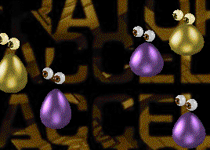
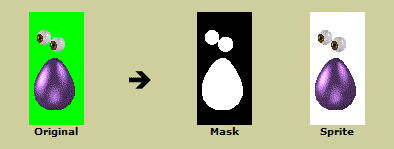
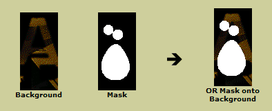
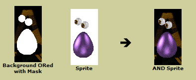
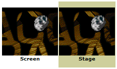
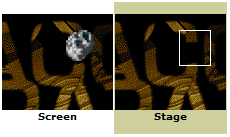
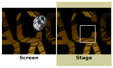
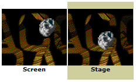
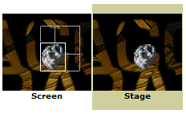

Blob Screen Saver (266K)
Blob Screen Saver (266K)
 Simple Transparent Sprites Demo (35K)
Simple Transparent Sprites Demo (35K)
 Transparent Sprite Classes (8K)
Transparent Sprite Classes (8K)
 24 Jun 1998
24 Jun 1998
First Posted
 Subclassing Without The Crashes
Subclassing Without The Crashes

Transparent GDI Sprite Library
Use basic Windows GDI functions to draw fast-moving transparent sprites
This VB library aims to make it simple to add fast, animated graphics using transparent sprites, something which is either missing or dismally slow using VB's standard methods. The source code provides a complete screen saver, and a simpler (and somewhat smaller) sample which animates a large number of asteroids around a non-firing, invunerable spaceship. These demonstrate how the sprite library can be quickly incorporated into an application.
Transparent bitmaps are not only used for games or screen savers; Windows uses them extensively for icons and also the ImageList common control has built in functions specifically for creating transparent bitmaps.
Drawing Bitmaps Transparently
There are three methods to draw a bitmap transparently. The first is to write custom drawing code which loops through all the bits in the bitmap and only draws pixels which aren't the background colour of the bitmap. The second is to use the TransparentBlt API call added to Windows 98/2000 and later operating systems. Both of these methods are fine, but if you need code which runs under every OS then another technique is needed.
The third method is to take advantage of the API BitBlt method. The grunt of BitBlt is implemented in the graphics card driver and is usually extremely quick (even under Windows 95). To make use of it to draw transparently, we need to process the bitmap to create what are know as the Sprite and the Mask bitmaps to draw with.
Creating Sprites and Masks
To create a sprite and a mask you need to do three things:
- Choose a colour in the bitmap you want to be transparent.
- Create a monochrome bitmap which is black where the bitmap should be transparent and white otherwise (this is called the mask).
- Change the bitmap colour to white in the transparent area (this becomes the sprite).
Having done this, the bitmap can be drawn transparently in two BitBlt operations:
- OR the Mask bitmap with the background.
This sets the background pixels to white where the sprite should be drawn (where the mask is white) but leaves them unaffected otherwise. (since 0 or 0 = 0, 1 or 0 = 1, 0 or 1 = 1, 1 or 1= 1). - AND the Sprite bitmap over the area you've just ORed the mask into.
Where the Sprite is white (the transparent area) there is no effect - it leaves the background pixels unaffected, but where the background has been coloured white by the mask the bitmap itself is drawn. (since 0 and 0 = 0, 1 and 0 = 0, 0 and 1 = 1, 1 and 1 = 1)
Thus the bitmap can be drawn transparently. The following series of pictures shows the process in detail:
Creating Sprite and Mask from the Bitmap
ORing the Mask onto the Background
ANDing the Sprite to get the Transparency Effect
That demonstrates the way to achieve transparent sprites, but you can do more if you want truly flicker-free drawing.
Achieving Flicker-Free Animation
When moving sprites, it becomes necessary to redraw the previous background under the sprite before moving it to its new position (unless you want to obtain a trail effect). This makes flicker a problem - generally you have to draw an area where the new sprite will be with the background and then draw the sprite in its new position over the top. This almost always results in flickering.
To prevent this occuring, you can create a buffer (normally called a Stage) to make all the changes in, maintaining the screen with the sprite in place for as long as possible. When it comes to redrawing the sprite in its new position, you can then make a minimum of calls to transfer the new position and erase the old position simultaneously. You don't get any flicker this way because all the updates you do are draw an image in which the new sprite is in place.
The code loop for this type of animation with my sprite library is always as follows:
- Restore the background behind the sprite into the stage.
- Move the sprite to its new position, and store the background behind the sprite. The stored background can be used to restore the background next time round the loop.
- Draw the sprite in its new position on the stage using the transparent draw method.
- Finally, copy the old and the new sprite positions from the stage to the screen. Here if the old sprite position is close to the new sprite position, we can minimise the amount of drawing by drawing both at the same time.
The loop is shown pictorially below:
Initial Position
Restore the background behind the sprites into the stage
This step is repeating for all other sprites in the scene:
Move the sprite to its new position in the stage
At this point the previous background area behind the sprite is stored so it can be restored next time round the loop. Note the background could be modified at this point if we wanted, provided you remember which rectangles have been updated so they can be copied in at the last point in the loop.
Draw The Sprite Transparently
Repeat for all sprites in the screen onto the stage:
Finally, Copy All Changes to the Screen
Ideally you can minimise the number of changes which need to be drawn. In this case the changed sprite and the background can be drawn together:
Check it Out
That's the principle of the sprite library. The code shows how to achieve all the above effects using GDI calls. The mask creation routine in the code is quite neat and can easily be pulled out and used elsewhere. This technique makes mask creation very quick: to do it, you first create a monochrome DC (using CreateCompatibleDC with a hDC of 0) and then select a monochrome bitmap into it. Use SetBkColor to set the back 'colour' of the monochrome DC to the colour you want to be the mask colour, and then when you BitBlt any bitmap into it, Windows automatically maps all pixels of this colour to black. You just need to invert it to get the mask.
To Install BlobSaver
If you want to try BlobSaver as a screen saver, just copy BlobSaver.scr, all the associated gif files and backdrop.jpg into your Windows directory. You can modify the images used to display the backdrop, or the sprite images with your own files by editing the registry entries which the screen saver creates under
HKEY_CURRENT_USER\Software\vbaccelerator\Blob Saver.
The sprite files should split into 7x5 images to display correctly.